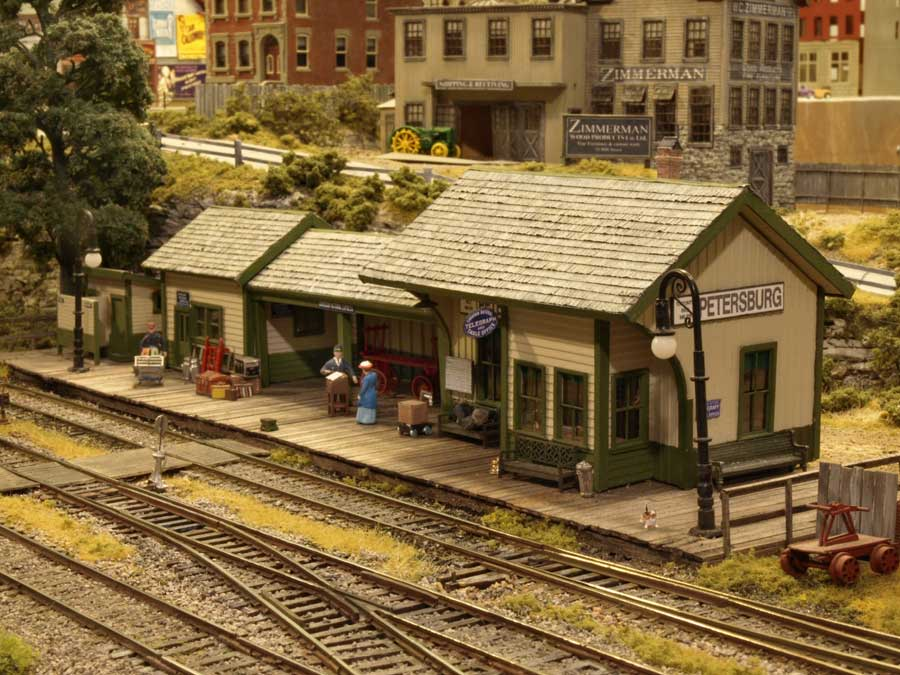
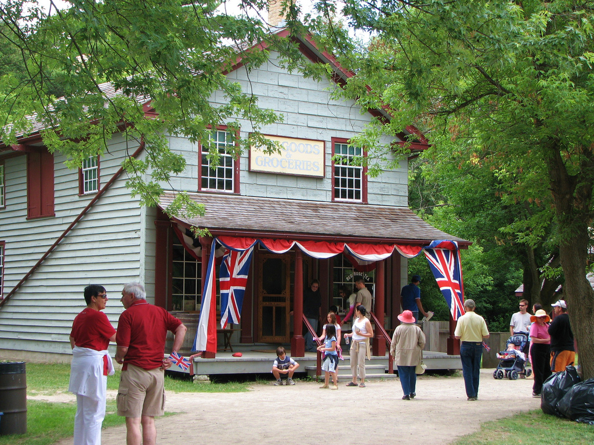
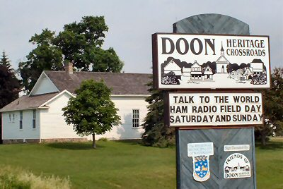
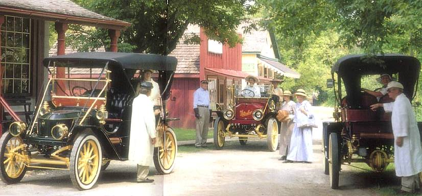
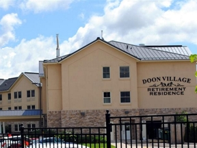

Doon Heritage Village
Doon Heritage Village is a living history museum located in the former Doon village, now part of Kitchener, Ontario, Canada which recreates life in rural Waterloo County during the year 1914. It has more than 22 buildings on more than 24 hectares (60 acres), next to Homer Watson Park. The museum is owned and operated by the Region of Waterloo. Construction began in late 2008 on the new Waterloo Region Museum. The museum is located at the entrance to Doon Heritage Village and the building opened on May 1, 2010. The museum and exhibits were officially opened in November 2011. The beautiful and picturesque 60-acre living history village is set in the year 1914. Costumed interpreters bring this wonderful family-friendly village to life. The Waterloo Region Museum building is the new entrance to Doon Heritage Village. Doon Heritage Village home school day. The village is a living exhibit that contains 20 historic buildings, period furnishings, farm animals, heritage gardens and demonstrations of daily chores. More than 40,000 visitors annually discover an exciting era of change in Canadian history at Doon Heritage Village. When visiting, see the new museum building and stroll the picturesque living history village with the whole family. Exhibit galleries in the museum building recently opened for you to explore.
History

1950–1959
August 1952 - Dr. A.E. Dusty Broome returns from visiting the Nederlands Openluchtmuseum in Arnhem, the Netherlands with the idea that a similar museum should be developed in Waterloo County, Ontario.
September 1953 - The Waterloo Historical Society passes a motion to strongly support the establishment of a Pioneer Village in Waterloo County.
November 1953 - Cressman Woods in Kitchener, Ontario, part of the Old Cressman Farm of Isaac Cressman is identified as the preferred location for the village.
January 1956 - An initial parcel of land is purchased next to Homer Watson Memorial Park.
August 1956 - The Province of Ontario grants the Ontario Pioneer Community Foundation its charter.
June 1957 - An additional 43 acres (170,000 m2) of land are purchased.

1960–1969
June 1960 - Museum building officially opens. July 1961 - General Store opens with the financial assistance of A.R. Goudie
1962 - Freeport Church is moved to the site by cutting it in half.
July 1963 - First live demonstration takes place featuring a blacksmith.
July 1964 - CPR D10 locomotive 894 is moved to village.
October 1967 - Recreated Waterloo Township Hall is opened as a Centennial Project in honour of Canada's 100th birthday.
1968 - Expansion of live exhibits with weaving, spinning and threshing demonstrations.
September 1968 - Agreement with the Grand River Conservation Authority that they will have control over the village's land, and the Ontario Pioneer Community Foundation will have jurisdiction over the day-to-day operations of the village.
1960–1969
June 1960 - Museum building officially opens. July 1961 - General Store opens with the financial assistance of A.R. Goudie
1962 - Freeport Church is moved to the site by cutting it in half.
July 1963 - First live demonstration takes place featuring a blacksmith.
July 1964 - CPR D10 locomotive 894 is moved to village.
October 1967 - Recreated Waterloo Township Hall is opened as a Centennial Project in honour of Canada's 100th birthday.
1968 - Expansion of live exhibits with weaving, spinning and threshing demonstrations.
September 1968 - Agreement with the Grand River Conservation Authority that they will have control over the village's land, and the Ontario Pioneer Community Foundation will have jurisdiction over the day-to-day operations of the village.

1970–1979
1970 - Agreement is reached that the Waterloo County Hall of Fame should be located at the village.
April 1, 1971 - The Grand River Conservation Authority takes over payment of wages and other expenses at the village.
1971 - Electricity is installed throughout the village, servicing buildings and grounds.
June 1972 - Opening of the Waterloo County Hall of Fame.
January 1, 1973 - Regional Municipality of Waterloo is incorporated.
1974 - Waterloo Regional Heritage Foundation contributes $8,500 to purchase and move the Peter Martin House from Waterloo.
1976 to 1979 - The Ontario Pioneer Community Foundation holds its All Our Yesteryears fundraising campaign to raise money for development of the Doon Pioneer Village site.
1970–1979
1970 - Agreement is reached that the Waterloo County Hall of Fame should be located at the village.
April 1, 1971 - The Grand River Conservation Authority takes over payment of wages and other expenses at the village.
1971 - Electricity is installed throughout the village, servicing buildings and grounds.
June 1972 - Opening of the Waterloo County Hall of Fame.
January 1, 1973 - Regional Municipality of Waterloo is incorporated.
1974 - Waterloo Regional Heritage Foundation contributes $8,500 to purchase and move the Peter Martin House from Waterloo.
1976 to 1979 - The Ontario Pioneer Community Foundation holds its All Our Yesteryears fundraising campaign to raise money for development of the Doon Pioneer Village site.

1980–1989
November 19, 1982 - At a Friends of Doon Luncheon, the key to the village is transferred from the Ontario Pioneer Community Foundation and the Grand River Conservation Authority to the Regional Municipality of Waterloo.
January 1, 1983 - The Regional Municipality of Waterloo assumes ownership and operation of Doon Pioneer Village and Heritage Community.
1985 - The village's name is changed to Doon Heritage Crossroads and the mission is changed to reflect rural Waterloo Region in the year 1914.
1985 - The Ontario Pioneer Community Foundation donates $20,000 toward the restoration of the Dry Goods and Grocery Store.
May 1988 - The Peter Martin House is opened to the public after a restoration project involving the Old Order Mennonite community in oral history, research and construction. Many of the tradespeople are direct descendants of Peter Martin who built the house in 1820.
1980–1989
November 19, 1982 - At a Friends of Doon Luncheon, the key to the village is transferred from the Ontario Pioneer Community Foundation and the Grand River Conservation Authority to the Regional Municipality of Waterloo.
January 1, 1983 - The Regional Municipality of Waterloo assumes ownership and operation of Doon Pioneer Village and Heritage Community.
1985 - The village's name is changed to Doon Heritage Crossroads and the mission is changed to reflect rural Waterloo Region in the year 1914.
1985 - The Ontario Pioneer Community Foundation donates $20,000 toward the restoration of the Dry Goods and Grocery Store.
May 1988 - The Peter Martin House is opened to the public after a restoration project involving the Old Order Mennonite community in oral history, research and construction. Many of the tradespeople are direct descendants of Peter Martin who built the house in 1820.

1990–1999
1990 - Livestock program is introduced with the addition of horses, cattle, sheep and fowl.
1990 - Heritage garden and seed saving program is introduced.
1993 - The Ontario Pioneer Community Foundation officially changes its name to The Friends of Doon Heritage Crossroads.
1994 - Doon embarks on a five-year plan to improve access for visitors with disabilities.
November 1995 - Waterloo Regional Curatorial Centre officially opens.
1990–1999
1990 - Livestock program is introduced with the addition of horses, cattle, sheep and fowl.
1990 - Heritage garden and seed saving program is introduced.
1993 - The Ontario Pioneer Community Foundation officially changes its name to The Friends of Doon Heritage Crossroads.
1994 - Doon embarks on a five-year plan to improve access for visitors with disabilities.
November 1995 - Waterloo Regional Curatorial Centre officially opens.

2000–today
2000 - Petersburg Grand Trunk Railway Station restored.
2004 - A blacksmith shop, modelled on an 1894 building, is recreated in the village.
2006 - A new roadway is constructed in the living history village.
2007 - Doon Heritage Crossroads celebrates its 50th Anniversary.
2008 - Construction begins on the Region of Waterloo History Museum.
2009 - Restoration of the village's Butcher Shop and Seibert House.
2009 - Doon Heritage Crossroads name is changed to Doon Heritage Village.
2010 - Waterloo Region Museum opens, serving as the gateway to Doon Heritage Village.